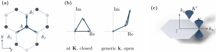
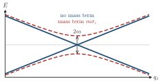

Advanced Quantum Materials 2027 · All lectures · Lecture notes
Session 2. Symmetries, Tight-Binding Band Structure Theory, and Effective Models
2.11a The Dirac cone of the honeycomb lattice of graphene
The honeycomb lattice of graphene has two orbitals per unit cell, one on each of two triangular sublattices, which are usually called \(A\) and \(B\), and which sit on an underlying triangular Bravais lattice. Nearest-neighbour hopping only connects \(A\) with \(B\), and never \(A\) with \(A\) or \(B\) with \(B\), so by the method of Section 2.7 the Bloch Hamiltonian (2.12) is purely off-diagonal,
\[H(\mathbf{k}) = \begin{pmatrix} 0 & f(\mathbf{k}) \\ f^\ast(\mathbf{k}) & 0 \end{pmatrix}, \qquad f(\mathbf{k}) = t\sum_{j=1}^{3} e^{i\mathbf{k}\cdot\boldsymbol{\delta}_j}, \tag{2.19}\]
where \(\boldsymbol{\delta}_j\), \(j=1,2,3\), are the three vectors that connect an \(A\) site with its nearest \(B\) neighbours. When we diagonalize (2.19) we obtain \(E_\pm(\mathbf{k})=\pm|f(\mathbf{k})|\). The function \(f(\mathbf{k})\) vanishes at two inequivalent points of the Brillouin zone, which are usually called \(K\) and \(K'\), since there the three phases in the sum cancel exactly. So both bands touch at exactly zero energy at \(K\) and \(K'\). It is useful to see this cancellation explicitly. Figure 2.5 shows the three phase factors at \(\mathbf{K}\) as three unit vectors at \(120^\circ\) from each other, which close a triangle and so sum to zero.

We expand \(f(\mathbf{k})\) to linear order around \(K\) and write \(\mathbf{k}=\mathbf{K}+\mathbf{q}\) for small \(\mathbf{q}\). The off-diagonal entry then becomes a linear function of \(\mathbf{q}\), with one linear term for its real part and one for its imaginary part, and (2.19) reduces to the standard two-dimensional Dirac Hamiltonian,
\[H(\mathbf{q}) \approx \hbar v_F\left(q_x\sigma_x + q_y\sigma_y\right), \qquad v_F = \frac{3ta}{2\hbar}, \tag{2.20}\]
where \(\sigma_x,\sigma_y\) are the Pauli matrices that act on the \(A/B\) sublattice space and \(a\) is the nearest-neighbour bond length. When we diagonalize (2.20) we obtain
\[E_\pm(\mathbf{q}) = \pm \hbar v_F |\mathbf{q}|, \tag{2.21}\]
which is a strictly linear dispersion with the shape of a cone around \(K\), and the same calculation gives the same result around \(K'\). This is what is called the Dirac cone. Note that the curvature of the cone along the radial direction vanishes, so (2.18) gives an infinite effective mass in this direction, and at the tip of the cone the effective mass is not defined at all. When we say that the electrons of graphene are “massless”, which is the phenomenology for which graphene is famous, we refer to the Dirac mass term, which is the gap, and not to the curvature of the band. This is the low-energy physics of every material with a honeycomb lattice, and of graphene in the first place. There is much more structure at \(K\) and \(K'\), namely a Berry phase and with it a topological classification, which we leave for the topology lecture right after this one.
The curvature of the cone is zero along the radial direction, and (2.18) gives an infinite mass. Why do we still call the electrons of graphene massless?
Show the answers
- A. ✓ True
This is true. Massless refers to the Dirac mass, which is a term that opens a gap at the touching point. It does not refer to the curvature of the band.

The cone \(E=\pm\hbar v_F|\mathbf q|\) and the same cone with a mass term \(m\sigma_z\), which gives \(\pm\sqrt{m^2+\hbar^2v_F^2q^2}\). Here \(\hbar v_F=1\) and \(m=0.5\). The mass opens a gap \(2m\) at the tip, and without it the bands touch. - B. ✗ False
This is false. For \(E=\hbar v_F q\) the second derivative along \(q\) is zero, so \(1/m^\ast=0\) and \(m^\ast\) is infinite. A zero mass would need an infinite curvature.
- C. ✗ False
This is false. The velocity \(v_F=3ta/2\hbar\) of (2.20) contains \(a\). A mass term \(m\sigma_z\) is absent for any value of \(a\), so the lattice constant does not decide whether the electrons are massless.
Massless means that there is no gap at the Dirac point.
Notebook check-in: session2.ipynb, “Infinite two-dimensional graphene” (Core)
Build the two-dimensional honeycomb Bloch Hamiltonian (2.19) directly and diagonalize it across the Brillouin zone. Zoom in on \(K\) and \(K'\) and check numerically that the dispersion there is really linear, which means that it agrees with (2.21) once you are close enough to the Dirac point.
Try it. Run the cell and zoom in on the bands near \(K\). Check that the two bands touch at zero energy and that they are straight lines close to this point. Then change the hopping in tij, and check that the slope of the lines changes with \(t\).
Show the answers
- A. ✓ True
This is true. The velocity \(v_F=3ta/2\hbar\) is proportional to \(t\), so the slope doubles. The touching point is fixed by the geometry of the lattice and not by the value of \(t\).
- B. ✗ False
This is false. The point \(K\) is where the phase factors of the three neighbors add up to zero. This depends only on the angles of the lattice, which are the same for \(t=1\) and \(t=2\).
- C. ✗ False
This is false. Doubling \(t\) only doubles \(v_F\) in \(H=\hbar v_F(q_x\sigma_x+q_y\sigma_y)\). The energies \(\pm\hbar v_F|\mathbf q|\) vanish at \(\mathbf q=0\) for \(t=1\) and for \(t=2\), so no gap appears.
The hopping sets the energy scale of the cone, and the lattice sets its position.